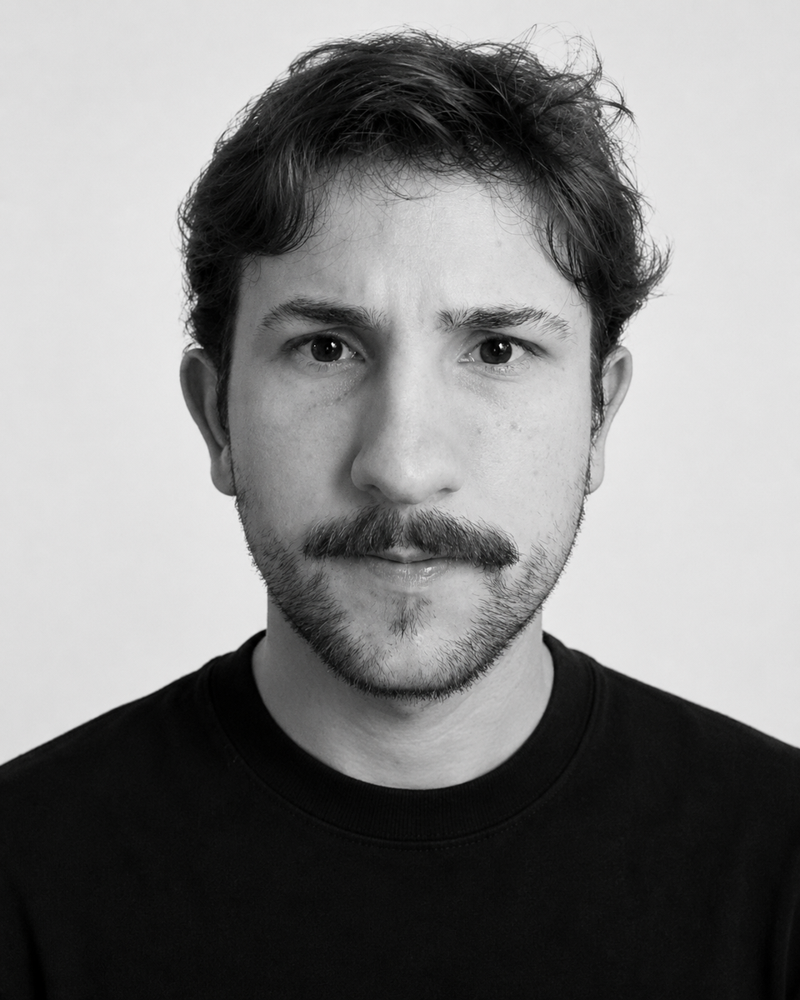

Available for new projectsBernardo Blom
I design brand systems
Top Senior Marketing Supervisor at CliftonLarsonAllen (CLA): B2B marketing, brand and presentation design.
Brands I’ve worked with
01 / Services
What I do
I design brand, funnels and decks for B2B companies: go-to-market strategy, visual identity and executive presentations.
Web Design
Product Design
Art Direction
02 / Selected work
Projects
04 / Experience
Experience
-
Current
CliftonLarsonAllen
Top Senior Marketing Supervisor
Promoted from Marketing Analyst in Sep 2026Among the world’s top audit & consulting firmsLed GTM for 2 B2B SaaS products (HR & Finance); built end-to-end funnels for acquisition and conversion; produced strategic materials used by leadership.
-
2025
Grupo Kaza
Art Director & Marketing Analyst
-
2024
Tecnoly
Design Advisor
R$1.5M+ exit -
2024
Deloitte
Marketing Analyst
Big Four firmStandardized brand identity across proposals and case materials used by 100+ consultants; delivered high-exposure C-level decks aligned with global positioning.
-
2023
Agência V10 Digital
Marketing Analyst
-
2023
abaré mkt&tech
Junior Marketing Analyst
-
2018
Calino Produções
Creative Assistant
05 / Contact
Let’s talk
- blomguim@icloud.com
- in/bernardo-blom
- Based in
- São José dos Campos, SP
local time - Status
- Available for new projects